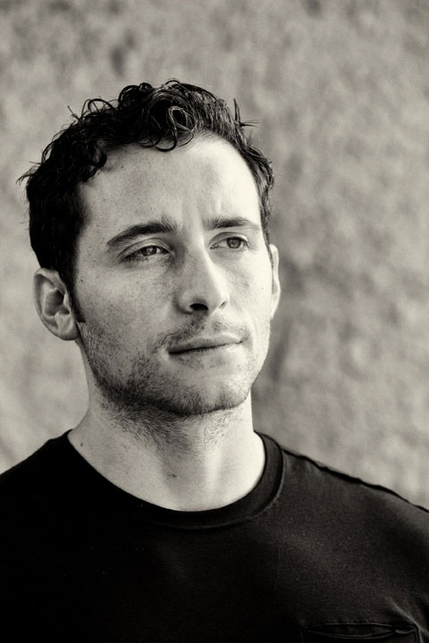

Here is what others are saying about Brad Schoenfeld, CSCS.
"As far as I'm concerned, Brad Schoenfeld is the world's expert on muscle hypertrophy. I've learned a ton from him over the past few years and you will too. Another thing I love about Brad is his commitment to science and the evidence-based process, so his views flow with the advancement of research. You won't meet anyone as passionate about the science of muscle growth than Brad, and he's been very generous with his knowledge! Thanks Brad, you are appreciated!"
Bret Contreras
Fitness
http://www.bretcontreras.com
"Brad has demonstrated time and time again why he is one of the premier scientists in exercise science. Not only has he published numerous peer reviewed articles, he also has written books, articles, and utilized other media to relay complex information to the lay person for consumption. He is exactly the type of person that the fitness industry needs."
Layne Norton
Champion Natural Bodybuilder
www.biolayne.com
"The fitness and muscle building world has been misled for decades. In recent years a few individuals have set themselves apart as the people bringing true value and scientifically verified information to the masses. Brad Schoenfeld is definitely one of these leaders. He is blazing a path to greatness and helping us all succeed in our muscle building and fat loss journeys."
Ben Pakulski
IFBB Professional Bodybuilder
www.benpakulski.com
"Before I met Brad, I just worked out to be in shape. Brad helped me take it to a new level. Now I know what I will gain from each exercise."
Shonna McCarver
Fitness Cover Model
"With his research and writing, Brad Schoenfeld has done a tremendous job of bringing more clarity to why we program for athletes and clients the way we do. However, unlike many researchers who've never trained clients or themselves, he walks the walk. I really enjoy his writing - and have benefited from it."
Eric Cressey
President, Cressey Performance - Hudson, MA
http://www.ericcressey.com
"Brad Schoenfeld is one of my heroes in the fitness industry. His research revisits a question that mainstream exercise scientists stopped asking years ago: 'What makes muscles grow?' The answers Brad finds shed new light on a subject many of us foolishly reduced to 'lift heavy things.' Brad's work is indispensable to journalists like me, along with all the gym rats and fitness nerds looking for new ways to achieve the ancient goal of looking better than we do now."
Lou Schuler
Author of the "New Rules of Lifting" series
http://www.louschuler.com
“Over the years, I’ve had the unique opportunity to spend time with many of the brightest minds in the health and fitness industry. Without a doubt, Brad Schoenfeld is one of those people. His relentless passion coupled with an egoless approach to exercise science is extraordinary.”
Joe Dowdell
Founder & CEO of Peak Performance
http://www.peakperformancenyc.com
"When I talk about hypertrophy, I frequently refer to Brad and his work. I call him the modern day "Godfather of Hypertrophy Science". Brad has a brilliant combination of technical expertise, and in the trenches field experience. He combines both well, and is rightly recognized as one of the best in business! When Brad speaks, I listen."
John Meadows
Nationally Ranked Bodybuilder and Trainer
http://www.mountaindogdiet.com
"Brad is a close friend and colleague of mine, but I still wouldn't be biased to say that his contributions to the allied fields of exercise and nutrition have educated and inspired many of the top guys in the fitness industry. He sets the prime example of being an accomplished athlete, coach, and scientist - all while staying humble, gracious, and down-to-earth. Brad is one of the greatest teachers I've had the pleasure to work with and learn from. Let me emphasize that this testimonial isn't hype; it's an understatement."
Alan Aragon
Publisher/Alan Aragon's Research Review
http://www.alanaragon.com
"I've worked with a lot of guys with impressive science degrees in muscle phys or nutrition, but it often comes with a price -- the science ruins them. What I mean by that is that they get mentally constipated – they memorize the facts but then can't apply them or make a deductive leap of any kind. It's really remarkable and kind of sad. I see it over and over again. Brad, however, is a different kind of animal, a scientist who absorbs and/or conducts research, makes a novel deductive leap or hypothesis, and then tests it out in the gym to see if it works. More often than not, his assumptions are dead on and the result is muscle. Lots of it."
TC Luoma
Editor-in-Chief
T Nation
"I work with the biggest and brightest names in the fitness industry, and I always need to find the best sources for quality information. When it comes to building muscle, Brad Schoenfeld is one of the first people I contact to help bridge the gap between what is happening in the world of science and workouts being created on the training floor. He provides the perfect combination for real world results."
Adam Bornstein
New York Times Best-selling author, award-winning fitness writer and editor
http://www.bornfitness.com